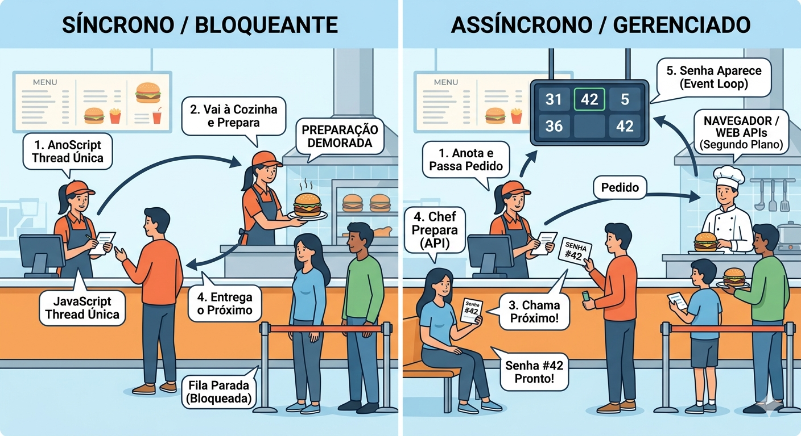
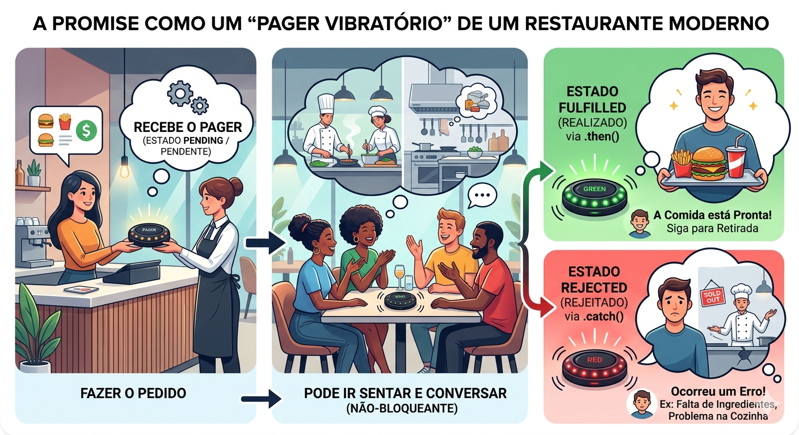
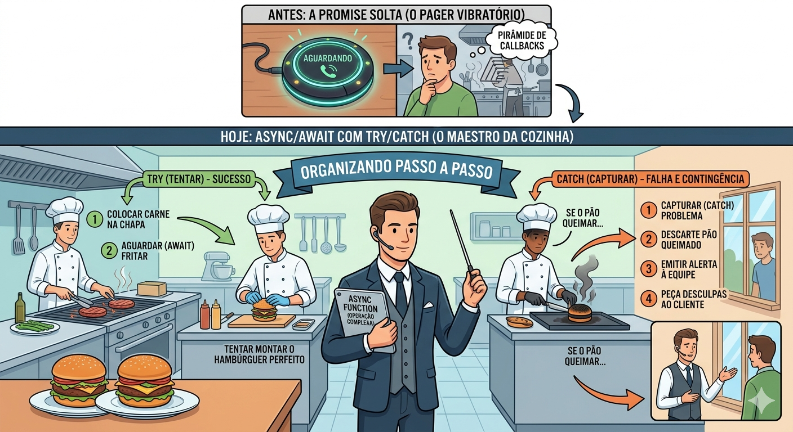

Exposição prática sobre o fluxo de execução no JavaScript. Diferenciação entre operações bloqueantes (síncronas) e não bloqueantes (assíncronas).
Evolução dos Callbacks para Promises e a adoção da sintaxe moderna com async/await. Aplicação prática simulando carregamento de dados do servidor (delay com setTimeout), integração com interface visual (loading spinner) e resiliência estrutural usando try/catch.
Imagine o sistema de uma grande rede de varejo durante a Black Friday. O cliente preenche os dados do cartão de crédito e clica em "Finalizar Compra".
Se o JavaScript fosse executado de forma estritamente síncrona e a comunicação com o gateway de pagamento (banco) demorasse 8 segundos, o navegador do usuário congelaria completamente.
Ele não conseguiria rolar a página, o cursor do mouse não responderia a outros botões e a interface pareceria "quebrada". O pânico se instalaria e a taxa de abandono de carrinho dispararia.
O assincronismo é o motor invisível que evita esse colapso, permitindo que a aplicação continue responsiva e "viva" aos olhos do usuário enquanto a transação é validada em segundo plano, garantindo uma experiência de uso fluida e profissional.
"Se você fosse o desenvolvedor front-end encarregado dessa tela de finalização de compra, como garantiria que o usuário soubesse que o pagamento está sendo processado de forma segura, sem deixá-lo ansioso e sem travar o restante da página?"
Compreender como o JavaScript lida com o tempo e as tarefas é essencial para qualquer desenvolvedor.
A metáfora do restaurante é excelente para visualizar o problema e a solução. Vamos desbravar esses conceitos de forma didática, dividindo o processo em partes mais fáceis de digerir.
O JavaScript roda em uma thread única (a Ul Thread). Isso significa que ele tem apenas um "trabalhador" lendo e executando as instruções do seu código.
É como se existisse apenas uma única pista em uma rodovia onde os carros (instruções) não podem ultrapassar uns aos outros.
Por padrão, o JavaScript é síncrono. O código é lido linha por linha, de cima para baixo. A próxima linha só é executada quando a atual terminar.
Visualizando o Síncrono: Voltando ao fast-food, é o atendente do caixa que anota o pedido, vai para a cozinha, frita o hambúrguer, monta o lanche, entrega ao cliente e apenas depois disso chama a próxima pessoa da fila.
O Grande Problema: Se o hambúrguer demorar muito para ficar pronto (como fazer o download de um arquivo grande ou buscar dados em uma API), toda a fila para.
No navegador, isso significa que a tela congela, botões não clicam e a usabilidade é destruída. Chamamos isso de código bloqueante.
Para evitar que a tela do usuário congele, o JavaScript delega tarefas demoradas para o próprio navegador (através de ferramentas chamadas Web APIs), que consegue fazer coisas em segundo plano sem atrapalhar a thread principal.
Visualizando o Assíncrono: O atendente anota o pedido e manda a ordem para a cozinha (o Navegador). Ele te entrega uma senha (o Callback) e imediatamente chama a próxima pessoa. A fila não para!
Se o trabalhador principal está sempre focado na linha atual de código, como ele sabe que a tarefa que estava em segundo plano terminou? É aqui que entra a mágica da arquitetura do JavaScript.
A Callback é justamente a "senha" da nossa metáfora. Em termos de código, é uma função que você passa como argumento para outra função, dizendo: "Guarde essa instrução e execute-a apenas quando o trabalho demorado terminar".
Se você precisa de uma sequência longa de tarefas dependentes, a situação complica. Por exemplo:
Se usarmos callbacks para isso, precisaremos colocar uma função dentro da outra, dentro da outra. Isso gera um código que cresce para a direita, em um formato de pirâmide >.
Esse é o Callback Hell, que torna o código visualmente poluído, difícil de entender e um pesadelo para consertar caso dê algum erro.

JavaScript
// Exemplo mostrando a ordem de execução do Event Loop com Callbacks
console.log("1. Atendente: Bom dia, anotando seu pedido...");
// O setTimeout simula a cozinha preparando o lanche em 2 segundos
setTimeout(function() {
console.log("3. Cozinha: O hambúrguer do cliente 1 está pronto!");
}, 2000);
console.log("2. Atendente: Próximo cliente da fila, por favor!");Linha 2: O motor do JS lê e executa instantaneamente de forma síncrona.
Linha 5 (setTimeout): O JS vê uma operação assíncrona. Ele entrega a função de callback e o tempo (2000ms) para o navegador gerenciar e passa reto para a próxima linha, sem esperar.
Linha 9: Executada imediatamente após o início do timer. Apenas depois de 2 segundos, o navegador insere a mensagem "3. Cozinha..." na fila para ser impressa.
O código não trava.
O setTimeout com tempo de 0 milissegundos NÃO é executado imediatamente.
Ele é jogado na fila assíncrona e só será executado após todas as linhas síncronas do código principal terminarem. O assincronismo respeita sempre a fila de prioridades.
A transição de Callbacks para Promises é um dos grandes saltos de qualidade na vida de qualquer desenvolvedor JavaScript.
Para resolver a confusão e a fragilidade do "Callback Hell", a linguagem trouxe essa ferramenta que organiza o caos e torna a leitura do código muito mais natural.
Vamos destrinchar esse conceito de forma didática!
Em termos simples, uma Promise (Promessa) é um objeto que age como um "vale" ou um "recibo" para um valor que ainda não existe, mas que estará disponível no futuro.
Em vez de você passar uma função lá para dentro da operação demorada (o antigo callback), a função demorada te devolve uma Promise instantaneamente.
A partir daí, você usa esse "recibo" para programar o que deve acontecer quando o trabalho terminar, deixando o fluxo do código reto e previsível.
Uma Promise nunca é ambígua. A partir do momento em que é criada, ela só pode estar em um de três estados muito bem definidos:
A analogia do restaurante é perfeita para entender como isso funciona na vida real:
Com as Promises, nós paramos de aninhar funções dentro de funções. Nós criamos um encadeamento elegante.
Se precisarmos fazer três buscas demoradas em sequência, escrevemos uma debaixo da outra usando múltiplos .then(), e se qualquer uma delas falhar, um único .catch() no final consegue lidar com o erro.
O código volta a ser fácil de ler e simples de dar manutenção!

JavaScript
// Criando uma função que retorna uma Promise que simula um banco de dados
function buscarUsuario(id) {
return new Promise((resolve, reject) => {
setTimeout(() => {
if(id === 1) {
// Sucesso! Transita para o estado Fulfilled
resolve({ nome: "Maria Silva", cargo: "Desenvolvedora" });
} else {
// Falha! Transita para o estado Rejected
reject("Erro 404: Usuário não encontrado no banco de dados.");
}
}, 1500); // Simulando 1.5s de delay da rede
});
}JavaScript
// Consumindo a Promise de forma organizada
console.log("Iniciando busca...");
buscarUsuario(1)
.then(dados => console.log(`Usuário encontrado: ${dados.nome}`)) // Executa se resolve()
.catch(erro => console.error(`Falha: ${erro}`)); // Executa se reject()
O poder das Promises está no encadeamento (chaining). Você pode ter vários .then() sequenciais, onde o resultado de um passa para o próximo, tornando o fluxo de dados linear e fácil de rastrear.
Você já deve ter percebido como as Promises melhoraram muito a nossa vida em relação à pirâmide de callbacks.
No entanto, encadear vários then() ainda deixa o código um pouco "picotado".
O nosso cérebro é treinado para ler textos de forma linear, de cima para baixo. É exatamente para resgatar essa naturalidade que o Async/Await foi criado!
Vamos desmistificar esses conceitos de forma bem clara.
O async e o await não são tecnologias completamente novas que substituem as Promises; eles são o que chamamos na programação de "açúcar sintático".
Eles usam o motor das Promises por baixo dos panos, mas colocam uma "roupagem" muito mais amigável, permitindo que a gente escreva código assíncrono como se ele fosse código síncrono comum.
Quando você coloca essa palavra antes de criar uma função, você está avisando ao interpretador do JavaScript: "Atenção, essa função vai lidar com o tempo e com promessas".
Traduzido literalmente como "aguarde", ele é colocado exatamente antes da instrução que retorna uma Promise. Ele diz ao código: "Pause a execução desta função específica até que a resposta chegue".
Essa "pausa" gerada pelo await não congela o seu navegador. O JavaScript é inteligente o suficiente para pausar apenas aquela função, liberando o Event Loop para continuar cuidando da interface (botões clicáveis, animações rodando) sem que a tela trave.
Se com o async/await nós abandonamos o uso do .then() para o sucesso, também não temos mais o .catch() encadeado no final da linha para lidar com as falhas.
Como garantimos que o sistema não quebre se a internet cair? Usamos uma estrutura clássica e robusta: o bloco Try / Catch.
É a zona de otimismo. Você envolve todo o seu código await (o caminho feliz) dentro deste bloco. O JavaScript vai "tentar" executar tudo linha por linha.
É a sua rede de segurança. Se qualquer coisa der errado lá dentro do bloco try (um erro 404 de API, servidor fora do ar, erro de digitação), o JavaScript aborta a tentativa na hora e "pula" diretamente para o bloco catch. Lá, você recebe o erro e pode tratá-lo com elegância (mostrando um aviso na tela para o usuário, por exemplo).
Se a Promise solta era o Pager Vibratório, o Async/Await acoplado com Try/Catch é como ter um Maestro (Gerente) organizando a cozinha passo a passo.
4. Se o pão queimar no meio do processo, ele imediatamente aciona a contingência: "Capture (catch) o problema, descarte o pão queimado, emita um alerta para a equipe e peça desculpas ao cliente".

JavaScript
// Usando a mesma função buscarUsuario(id) que retorna a Promise criada anteriormente
// Declarando a função como assíncrona
async function exibirPerfilUsuario(id) {
console.log("Renderizando esqueleto da tela...");
try {
// Pausamos o fluxo apenas nesta função enquanto aguardamos a Promise
const usuario = await buscarUsuario(id);
// Esta linha só executa se a linha acima tiver sucesso
console.log(`Sucesso: Atualizando DOM com o nome ${usuario.nome}`);
} catch (erro) {
// Se a Promise disparar um reject, caímos imediatamente aqui
console.error(`Ops, tivemos um problema: ${erro}`);
} finally {
// Executa sempre, dando certo ou errado
console.log("Ocultando animação global de carregamento...");
}
}
exibirPerfilUsuario(1);
const usuario = await buscarUsuario(id);substitui a necessidade de um .then(). O resultado "desempacotado" da Promise vai direto para a variável usuario. Limpo e elegante.Um erro comum de juniores é esquecer o await antes da chamada da Promise. Se você não colocar o await, a variável receberá o objeto da Promise pendente, e não o resultado dos dados que estavam vindo pela rede. Seu código quebrará logo em seguida ao tentar acessar propriedades inexistentes.
Aplicação Prática em Interface
O CEO da startup em que você trabalha pediu uma prova de conceito (PoC). Precisamos criar um botão que busque dados na base de clientes, mas com uma regra vital de UX (User Experience): enquanto os dados não chegam, o usuário precisa ver um "Loading spinner" ativado, para ter clareza de que o sistema está trabalhando e não travou. Se der erro, um alerta vermelho deve ser mostrado.
Vamos integrar simulação de delay de rede, manipulação de estado do DOM (ativar/desativar o loading) e a sintaxe moderna do async/await com try/catch.
Abaixo, você encontra o código completo e unificado. Você pode salvá-lo como um arquivo index.html e abrir direto no seu navegador para ver a mágica acontecer!
(Dividido nos próximos slides para melhor leitura)
HTML
<!DOCTYPE html>
<html lang="pt-BR">
<head>
<meta charset="UTF-8">
<meta name="viewport" content="width=device-width, initial-scale=1.0">
<title>PoC - Assincronismo e UX</title>
<style>
/* CSS Base e Animação do Spinner */
body { font-family: Arial, sans-serif; padding: 20px; }
.oculto { display: none; }
.spinner {
border: 4px solid #f3f3f3;
border-top: 4px solid #3498db;
border-radius: 50%;
width: 20px;
height: 20px;
animation: spin 1s linear infinite;
margin-top: 10px;
}
@keyframes spin {
0% { transform: rotate(0deg); }
100% { transform: rotate(360deg); }
}
#resultado { margin-top: 15px; font-weight: bold; }
button { padding: 10px 15px; font-size: 16px; cursor: pointer; }
button:disabled { cursor: not-allowed; background-color: #cccccc; }
</style>
</head><body>
<h2>Dashboard Financeiro</h2>
<button id="btnCarregar">Carregar Dados Financeiros</button>
<div id="loading" class="spinner oculto"></div>
<div id="resultado"></div>
<script>
// 1. O Servidor Fake (Nossa Promise)
function requisicaoApiFake() {
return new Promise((resolve, reject) => {
// Simulando delay de rede de 2 segundos
setTimeout(() => { // Sorteia um número de 1 a 10. Se > 2 (80% de chance), dá sucesso.
const sorteio = Math.floor(Math.random() * 10) + 1;
if (sorteio > 2) {
resolve({ saldo: "R$ 4.530,00", ultimaMovimentacao: "15/10/2026" });
} else {
reject("Servidor offline. Tente novamente.");
}
}, 2000);
});
} // 2. O Maestro da Interface (Lidando com o tempo)
async function carregarDados() {
const btn = document.getElementById('btnCarregar');
const loading = document.getElementById('loading');
const resultado = document.getElementById('resultado');
// ESTADO 1: Preparação e Loading
btn.disabled = true; // Previne múltiplos cliques indesejados
loading.classList.remove('oculto'); // Mostra a animação
resultado.innerHTML = ""; // Limpa a tela para os novos dados
try { // ESTADO 2: A Pausa Estratégica (Espera não-bloqueante)
const dados = await requisicaoApiFake();
// ESTADO 3 (Sucesso): Injetando no DOM
resultado.style.color = "green";
resultado.innerHTML = `Saldo: ${dados.saldo} <br> Última Movimentação: ${dados.ultimaMovimentacao}`;
} catch (erro) {
// ESTADO 3 (Falha): Contingência e Feedback Visual
resultado.style.color = "red";
resultado.innerHTML = `⚠️ Erro Crítico: ${erro}`; } finally {
// ESTADO 4: A Limpeza (Executa dando certo ou errado)
loading.classList.add('oculto'); // Esconde a animação
btn.disabled = false; // Reativa o botão
}
}
// 3. O Gatilho
document.getElementById('btnCarregar').addEventListener('click', carregarDados);
</script>
</body>
</html>Para garantir que o conceito fique cristalino, veja como as peças desse quebra-cabeça se encaixam:
Caminho Feliz: Se a Promise for resolvida, o await recebe os dados, o código avança para a próxima linha e imprime o saldo em verde.
Caminho Triste: Se a Promise for rejeitada (os 20% de chance de erro), o interpretador pula todo o resto do try e cai direto na rede de segurança do catch, imprimindo a falha em vermelho.
Independentemente de qual caminho o código tomou no passo anterior, o finally é invocado para esconder o spinner e liberar o botão novamente, fechando o ciclo perfeitamente.
O resultado esperado ao rodar o exercício (abrindo o arquivo index.html no navegador) é um comportamento interativo dividido nas seguintes etapas:
Você verá o título "Dashboard Financeiro" e um botão clicável escrito "Carregar Dados Financeiros". A tela estará limpa, sem carregamentos ou textos abaixo do botão.
O spinner continuará girando na tela por exatos 2 segundos, simulando o tempo que a internet levaria para ir até o servidor buscar as informações.
Como programamos uma taxa de sucesso de 80%, após os 2 segundos, o spinner desaparecerá, o botão voltará a ser clicável e uma das duas coisas acontecerá:
Aparecerá um texto na cor verde informando os dados resgatados:
Saldo: R$ 4.530,00
Última Movimentação: 15/10/2026
Aparecerá um texto na cor vermelha informando o erro simulado:
⚠️ Erro Crítico: Servidor offline. Tente novamente.
Se você continuar clicando no botão repetidas vezes (aguardando o ciclo terminar), verá o sistema alternando entre os resultados de sucesso e erro, provando que o bloco try/catch está gerenciando os dois cenários perfeitamente.
Pergunta: Eu posso usar a palavra await solta no meio do meu script, sem estar dentro de uma função?
Resposta: Nas versões mais recentes do JavaScript (ES modules) você pode usar o chamado Top-level await. Porém, em scripts de navegador normais, isso vai disparar um erro de sintaxe. O seguro é sempre encapsular a lógica que tem await dentro de uma função marcada com async.
Pergunta: Qual a diferença prática entre a UI Thread travar com código síncrono e travar usando Web Workers?
Resposta: A UI Thread controla a pintura na tela e os cliques. Web Workers operam em um processo totalmente separado do sistema operacional. O assincronismo que ensinamos hoje (Event Loop) usa "tempos mortos" de uma thread só. O Web Worker roda cálculos astronômicos (matemáticos complexos) em outro núcleo do processador sem sobrecarregar a UI de forma alguma.
Pergunta: Se minha página faz três requisições para APIs diferentes, colocar um await após o outro não seria lento?
Resposta: Excelente pergunta. Sim! Se elas não dependem uma da outra (ex: buscar perfil, buscar clima e buscar cotação), usar await sequencial forçará a segunda a esperar a primeira acabar. Nesse caso de mercado, utilizamos o padrão Promise.all([req1, req2, req3]) para fazer as três de uma vez em paralelo.
Pergunta: Como fica a IA (Inteligência Artificial) generativa no processo de estudar promises? Devo pedir para ela resolver meus erros de try/catch?
Resposta: IA é uma ferramenta para gerar exemplos adicionais, não um atalho para terceirizar a lógica. Peça à IA: "Me explique por que minha promise está retornando <pending>", em vez de pedir o código pronto. Se a IA escrever a abstração do await, você não treina o modelo mental de pausas na thread.
Pergunta: Ainda existe Callback em código moderno? Posso aposentar?
Resposta: Você pode aposentar o Callback Hell, mas callbacks continuam existindo fortemente. Todo tratador de eventos (ex: btn.addEventListener('click', () => {...})) ou funções de array modernas (ex: array.map(item => item * 2)) utilizam a essência de passar uma função anônima para ser chamada em resposta a um evento ou iterador.
Desafios práticos
Eles devem ser entregues individualmente no AVA, mas podem ser realizados em grupos.
Em nosso projeto, construiremos o Frontend e o Backend separadamente. O Backend será escrito em PHP. Como vamos enviar e receber os dados no Frontend (JavaScript) sem ter que ficar apertando F5 ou dar reload na página toda vez que gravarmos ou pesquisarmos um registro no banco?
É exatamente aqui que o async/await brilha. Utilizaremos o conhecimento da aula de hoje, junto à interface de spinner de carregamento, para nos comunicarmos silenciosamente com a API REST que criaremos no PHP nas próximas semanas, garantindo a robustez do nosso CRUD.
Avançaremos nossos superpoderes assíncronos implementando a função nativa fetch(). Vamos deixar as simulações e conectar nosso JavaScript com a "internet de verdade", consumindo APIs públicas que rodam no servidor.
Antes do nosso próximo encontro, faça uma reflexão de mercado: "Você entende por que, num modelo de arquitetura de software moderno, o código frontend do navegador e o banco de dados nunca confiam um no outro de forma síncrona?"